Ivan
Suiyama
Silva
Desenvolvedor Web Full Stack
Trajetória
Acadêmica
Tecnólogo em Desenvolvimento de Software Multiplataforma
2023 – Atual
Faculdade de Tecnologia FATEC Prof. Jessen Vidal
Tecnólogo voltado a aprender a aprender, com linguagens como Python, React, React Native, Java, TypeScript e Node.js, entre outras, com foco na criação de sites, sistemas web e aplicativos mobile. Duração: 6 semestres.
Tecnólogo em Manufatura Avançada
2019 – 2021
Faculdade de Tecnologia FATEC Prof. Jessen Vidal
Tecnólogo voltado à automação e à inovação, com metodologias ágeis como Scrum e projetos integrados que estimulam o aprendizado em todas as matérias do semestre.
Profissional
Estágio – Desenvolvedor de Software
05/2026 – Atualmente
Play Educacional
Responsável pelo desenvolvimento de sistemas internos, execução de manutenções corretivas e evolutivas em aplicações web, além do gerenciamento e administração de servidores VPS, garantindo a disponibilidade e o desempenho das soluções implantadas.
Habilidades
Projetos Acadêmicos (APIs)
API – 5º semestre · Veredito
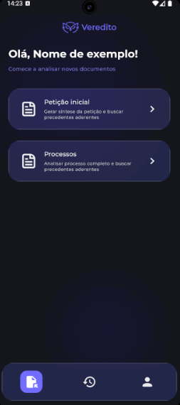
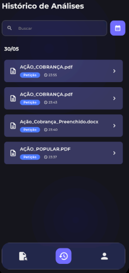
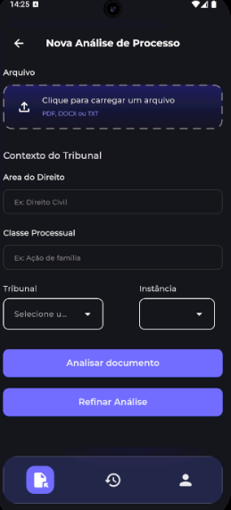
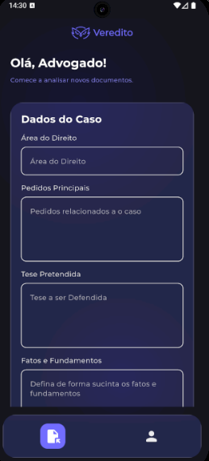
 Flutter
Flutter NestJSIA Generativa
NestJSIA Generativa
Aplicação Mobile para Auxiliar Juízes e Advogados
Sobre o projeto:
Aplicação mobile desenvolvida para auxiliar juízes e advogados no dia a dia jurídico, utilizando inteligência artificial generativa e comparação semântica de embeddings para análise de documentos, busca de precedentes e elaboração de minutas de processos. Empresa Parceira: Xertica AI.
Contribuições pessoais no projeto:
- Atuação no backend e no frontend da aplicação.
- Implementação de streaming via protocolo SSE (Server-Sent Events).
- Exibição progressiva das respostas da IA, sem aguardar o processamento completo.
- Desenvolvimento do histórico de petições.
- NestJS & TypeScript
- PostgreSQL & TypeORM
- LangChain & OpenAI API
- Embeddings e busca semântica
- Streaming em tempo real com SSE (Server-Sent Events)
- Flutter & Dart
- Riverpod & Dio
- Docker & Swagger
- Colaboração: Aprendi que posso pedir ajuda e contar com o apoio dos colegas, entendendo que isso fortalece o resultado final.
- Humildade: Entendi que não preciso ser o foco principal nem concentrar tudo em mim, reconhecendo o valor do trabalho coletivo.
- Confiança e delegação: Aprendi a dividir responsabilidades e confiar no time, sem tentar fazer tudo sozinho.
API – 4º semestre · Estação Meteorológica
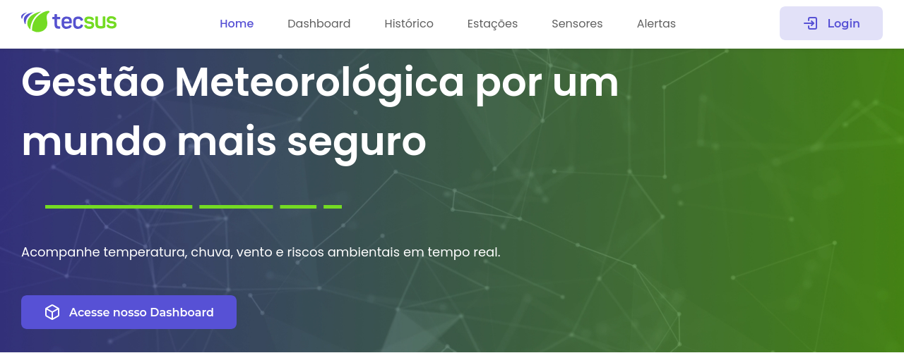
 Python
Python FastAPI
FastAPI React
ReactSistema de Controle para Estação Meteorológica
Sobre o projeto:
Sistema de controle e monitoramento climático projetado para coletar, processar e exibir dados meteorológicos em tempo real a partir de sensores físicos e estações integradas. Empresa Parceira: Tecsus.
Contribuições pessoais no projeto:
- Integração dos dados das estações meteorológicas.
- Desenvolvimento da camada física (hardware) do projeto.
- Montagem com ESP32 e sensores de luminosidade, temperatura, umidade e pluviômetro.
- Python & FastAPI
- SQLAlchemy & PostgreSQL
- Alembic (migrações de banco)
- spaCy (processamento de linguagem natural)
- React, TypeScript & Vite
- Leaflet (mapas interativos)
- Highcharts & Chart.js
- ESP32 & sensores IoT
- Docker
- Autonomia: Assumi as tarefas sem esperar cobrança ou direcionamento, tomando a iniciativa para manter o projeto andando.
- Resiliência: Mesmo com o grupo se desfazendo e uma sprint inteira sem equipe, mantive o compromisso até ser acolhido por outro grupo.
- Organização: Ao entrar em um grupo que já tinha quase tudo pronto, planejei e executei a maior parte da sprint final, garantindo a conclusão das entregas.
API – 3º semestre · Portal de Transparência
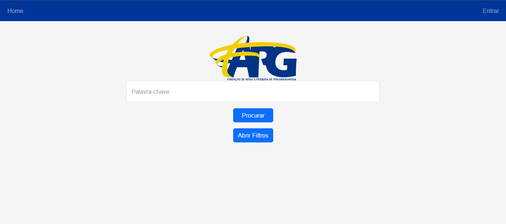
 TypeScriptReact
TypeScriptReact Spring Boot
Spring Boot
Portal de Transparência
Sobre o projeto:
Plataforma web desenvolvida para atender às necessidades da Fundação FAPG, promovendo a transparência pública de projetos, investimentos e bolsistas e permitindo o acompanhamento e a fiscalização pela sociedade. Empresa Parceira: FAPG.
Contribuições pessoais no projeto:
- Ciclo completo de cadastro de projetos: criação, edição e exclusão.
- Ciclo completo de cadastro de bolsistas: criação, edição e exclusão.
- Implementação de ocultação de campos.
- Implementação da autenticação.
- Java 17 & Spring Boot
- Spring Data JPA & Hibernate
- Spring Security & JWT
- MySQL
- React & TypeScript
- Bootstrap & Chart.js
- jsPDF & XLSX (exportação de relatórios)
- Selenium (web scraping)
- Maven
- Gestão de pessoas: Continuei atuando na mediação de conflitos e na organização do time, mantendo o grupo alinhado mesmo nos momentos de pressão.
- Proatividade: Segui antecipando tarefas e problemas, assumindo iniciativas sem esperar cobrança e ajudando o time a manter o ritmo.
- Resiliência: Mantive a constância diante das dificuldades, usando o aprendizado dos projetos anteriores para ajudar o grupo a não perder o foco.
API – 2º semestre · Internet Ocean
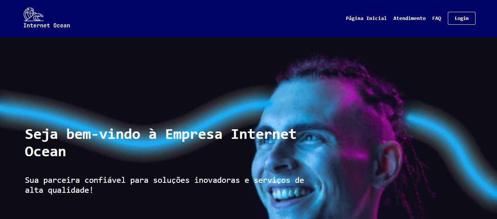
TypeScriptReact MySQL
MySQL JavaScript
JavaScript
Sistema de Gerenciamento de Chamados
Sobre o projeto:
Sistema corporativo web para gerenciamento e triagem de chamados de suporte técnico, com fluxos específicos para clientes, equipe técnica e administradores. Cliente Interno: FATEC.
Contribuições pessoais no projeto:
- Desenvolvimento do backend.
- Criação de funções e classes.
- Desenvolvimento e estruturação do banco de dados.
- Implementação de recuperação de senha.
- Implementação de envio de e-mail.
- Node.js & TypeScript
- React
- MySQL
- APIs REST
- Modelagem de banco de dados
- Autenticação e recuperação de senha
- Envio de e-mails automatizados
- Git & Scrum
- Gestão de pessoas e conflitos: Como Scrum Master, conduzi conversas diretas com o time para resolver intrigas e alinhar expectativas, priorizando um ambiente saudável.
- Proatividade: Passei a antecipar problemas e agir antes de ser cobrado, propondo soluções e apoiando o grupo nas entregas.
- Resiliência: Mantive o foco e a postura profissional nos momentos de tensão, ajudando o time a continuar entregando mesmo diante dos conflitos.
API – 1º semestre · C3 Banking
Python Flask
Flask SassMySQL
SassMySQL
Internet Banking Simulado C3
Sobre o projeto:
Aplicação web desenvolvida para simular as principais funcionalidades de um internet banking, incluindo operações financeiras como consulta de saldo, extrato, saques, depósitos e transferências. Cliente Interno: FATEC.
Contribuições pessoais no projeto:
- Suporte ao projeto, auxiliando na correção de funções menores.
- Correções no backend e no frontend.
- Contribuição para a estabilidade e o funcionamento geral da aplicação.
- Python & Flask
- Jinja2
- MySQL & PyMySQL
- Sass / SCSS
- APScheduler (rotinas agendadas)
- HTML & CSS
- Git
- Lógica de programação
- Resiliência: Aceitei a mudança de papel no grupo e o distanciamento inicial sem desistir da entrega.
- Persistência: Continuei me colocando à disposição e correndo atrás de tarefas mesmo quando o time já estava organizado sem mim.
- Amadurecimento: Aprendi a lidar com a frustração, manter a postura profissional e transformar a experiência em evolução pessoal.
Projetos Profissionais
Matriculei
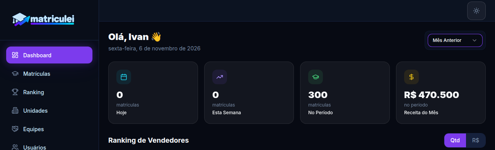
React
TypeScript
 Vite
Vite
 Node.js
Node.js
 Express
Express
 PostgreSQL
PostgreSQL
Sistema de gestão e controle de matrículas
Sobre o projeto:
Plataforma web de gestão comercial para instituições de ensino, com controle de matrículas, equipes, vendedores, metas, ranking e relatórios em um painel centralizado com indicadores em tempo real. O sistema conta com autenticação, controle de permissões e suporte a múltiplas unidades.
Contribuições pessoais no projeto:
- Desenvolvimento solo do projeto, sem equipe de desenvolvimento, atuando de ponta a ponta no frontend e no backend.
- Apoio do gestor na definição de requisitos, prioridades e validação das entregas.
- Implementação dos módulos de matrículas, equipes, vendedores, metas e relatórios.
- Construção da API REST, autenticação e controle de permissões.
- Manutenção e evolução contínua do sistema em produção.
- React & TypeScript
- Node.js & Express
- PostgreSQL & Prisma
- Vite
- Desenvolvimento de APIs REST
- Autenticação e controle de permissões
- Modelagem de dados
- Git e versionamento
- Autonomia: Desenvolvi o projeto de ponta a ponta, tomando decisões técnicas e conduzindo as entregas.
- Organização: Priorizei funcionalidades e mantive a evolução do sistema estruturada.
- Comunicação: Alinhei requisitos, prazos e prioridades com o gestor responsável.
- Atenção aos detalhes: Cuidei da consistência da interface e da experiência de uso.
- Resiliência: Mantive o sistema evoluindo e corrigindo problemas em produção.
Projetos Pessoais
Noiton 2.0
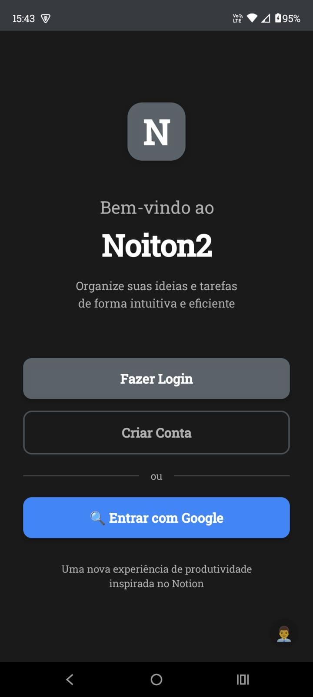
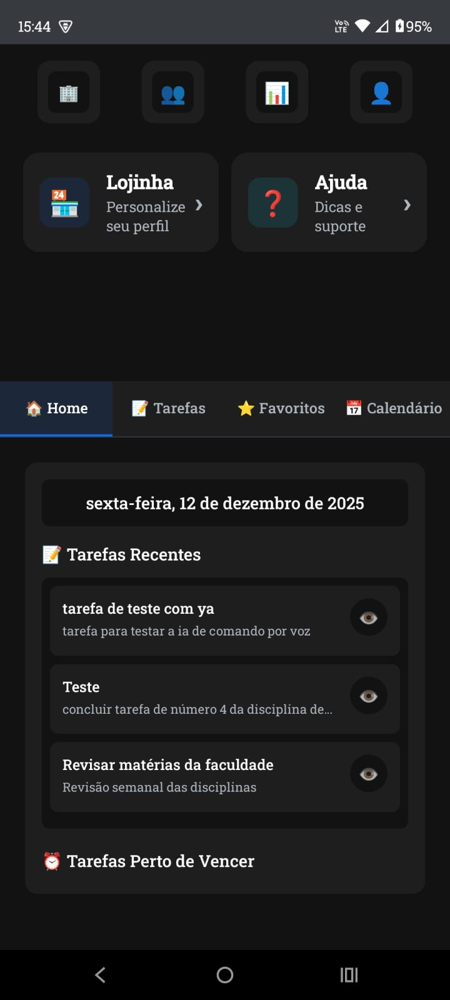
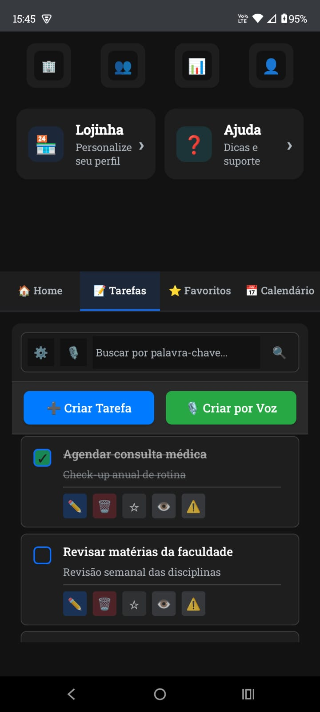
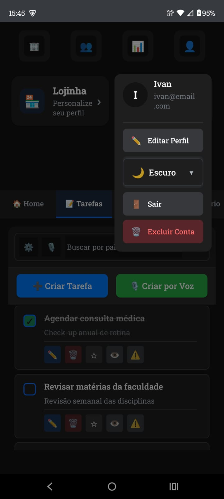
Node.js
React Native
Aplicativo de Gerenciamento e Compartilhamento de Tarefas
Aplicativo de gerenciamento e compartilhamento de tarefas desenvolvido para facilitar a organização individual e em equipe, com recursos avançados para quem busca uma solução completa.
Contribuições pessoais no projeto:
Desenvolvido inteiramente por mim, com destaque para a criação de tarefas por voz com IA, cache offline, login com Google, loja de temas e avatares como recompensa por tarefas concluídas.
- React Native & TypeScript
- Módulos nativos Android em Java
- Node.js & Express.js
- PostgreSQL
- SQLite (cache offline)
- JWT & OAuth 2.0 (login com Google)
- Firebase Cloud Messaging (push notifications)
- Google Calendar API
- IA para criação de tarefas por voz
- Autonomia: Desenvolvi o projeto do zero sozinho, assumindo as decisões técnicas e de produto.
- Proatividade: Identifiquei necessidades e implementei melhorias sem esperar direcionamento, antecipando problemas e propondo soluções.
- Organização: Planejei as etapas, priorizei funcionalidades e mantive o projeto estruturado até a entrega.
Baixador de Músicas
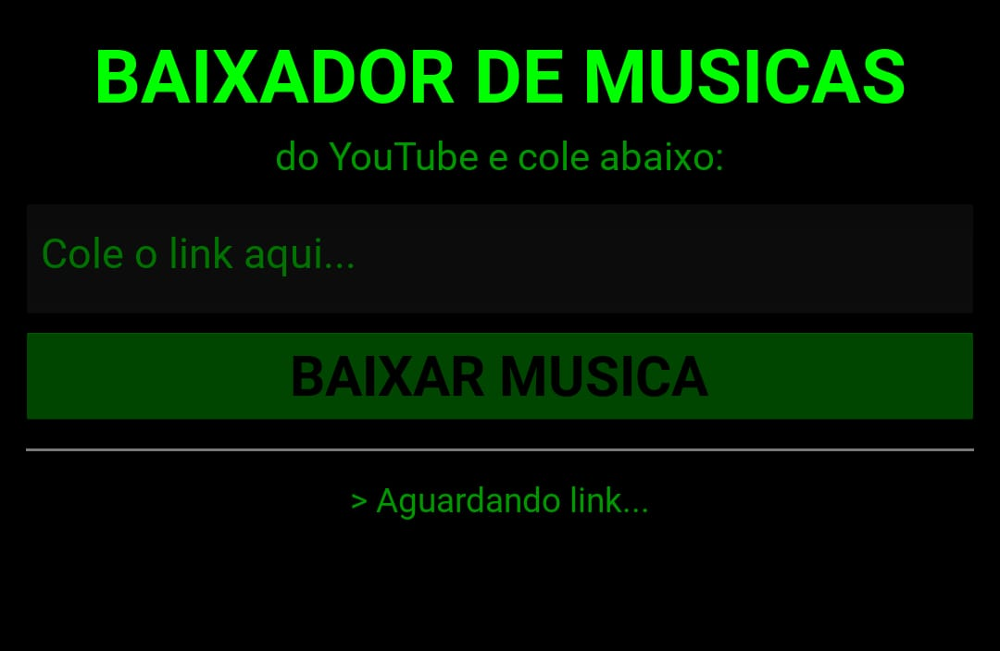
Python
Kivy
yt-dlp
Buildozer
Aplicativo Android para Download de Músicas
Aplicativo Android desenvolvido inteiramente em Python com Kivy. Baixa áudios do YouTube e os salva na pasta Music do dispositivo.
Destaques técnicos
Contorna as restrições de armazenamento do Android 10+ usando a MediaStore API por meio de chamadas Java nativas via jnius. Interface com tema hacker, fundo preto e letras verdes.
- Python 3.11
- Kivy 2.3
- yt-dlp com auto-update em runtime
- Buildozer
- python-for-android (p4a)
- Cython
- jnius (ponte Python ↔ Java)
- MediaStore API (Android 10+)
- Empacotamento e build de APK
- Autonomia: Desenvolvi o projeto do zero sozinho, assumindo as decisões técnicas e de produto.
- Proatividade: Identifiquei necessidades e implementei melhorias sem esperar direcionamento, antecipando problemas e propondo soluções.
- Organização: Planejei as etapas, priorizei funcionalidades e mantive o projeto estruturado até a entrega.